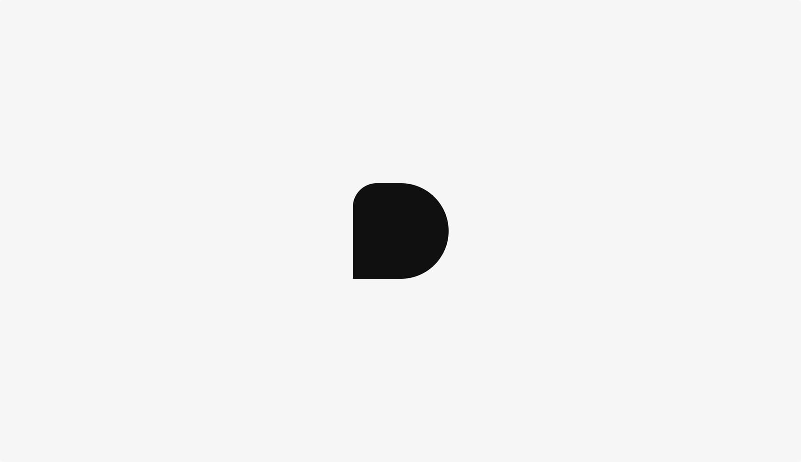
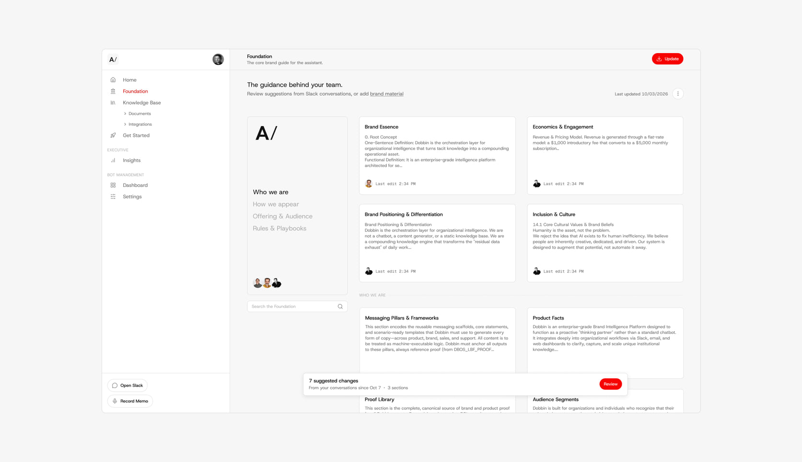
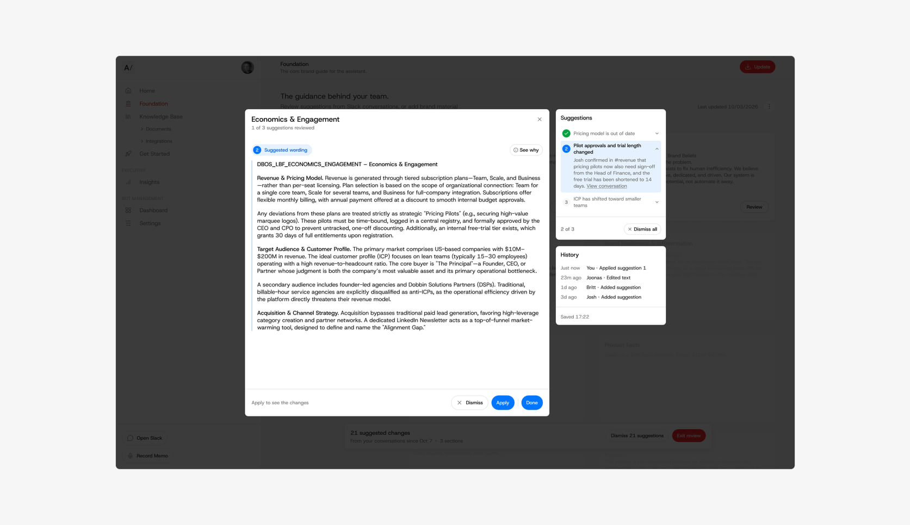
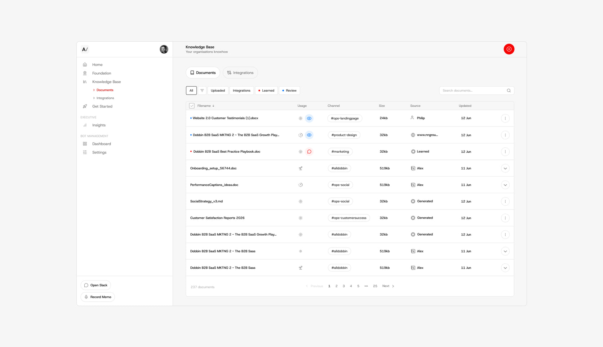
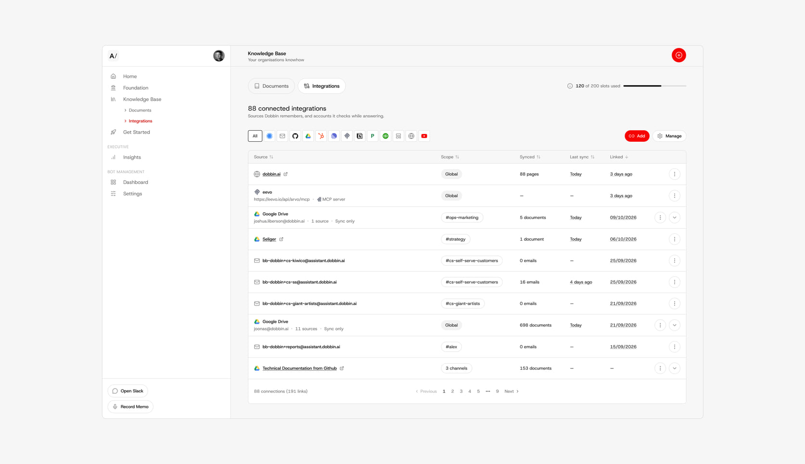
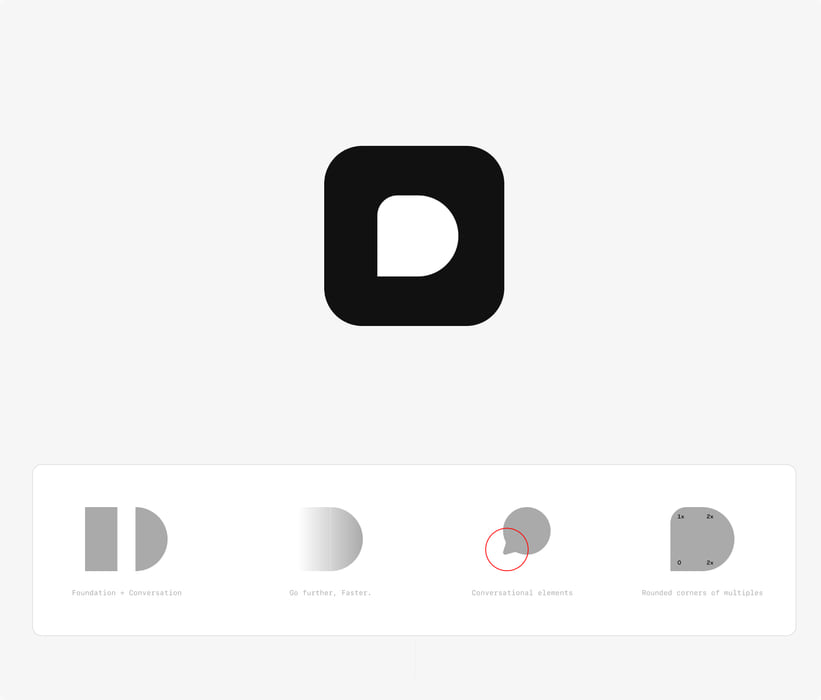
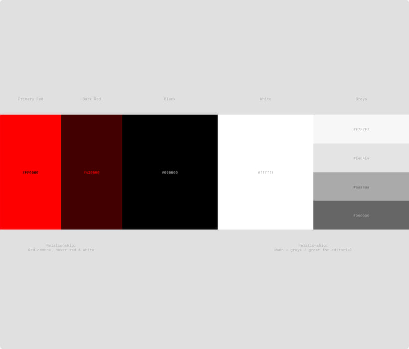
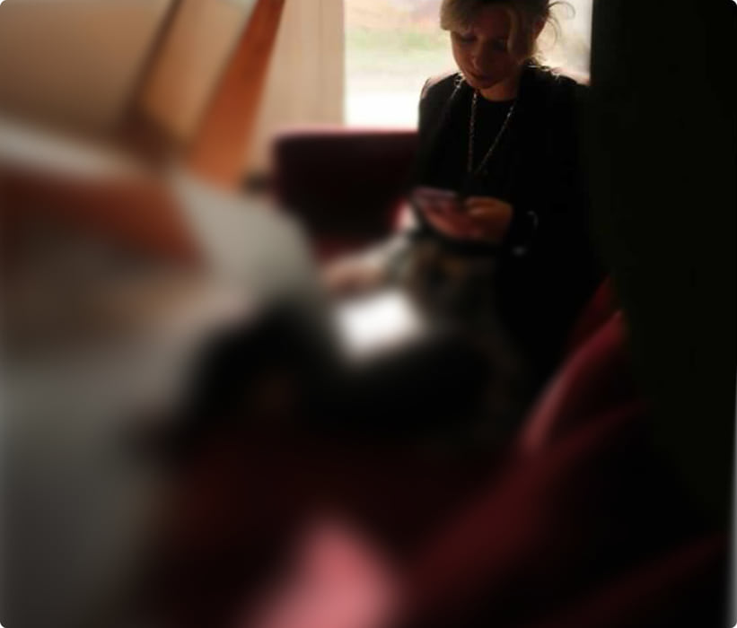
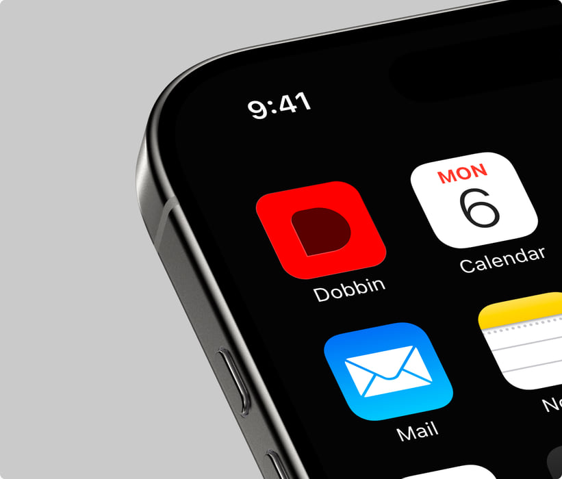

Dobbin is a company AI, purpose-built for your business.

Big Picture
Dobbin is an AI thinking partner for companies, built to see the world through the lens of your brand, market and operating context. It lives in Slack, is available to your whole team and runs on a secure knowledge system.
Role
As Founding Designer I worked 0→1 across brand, strategy, and product design. Working closely with our two founders and marketing team I’ve delivered Dobbin’s evolving brand and designed and built Dobbin’s design system using Claude, Cursor and Figma, delivering production ready work.
Outcome
An iterative design process to find product market fit.
● Steady customer growth, low churn rate (8 of our first 10 customers remain with us).
● Clients such as Area17, Mark Seliger Studio and Evite.
● Delivered brand, marketing website and Dobbin HQ product.
Credit
Hi Shine (Explainer animation)







